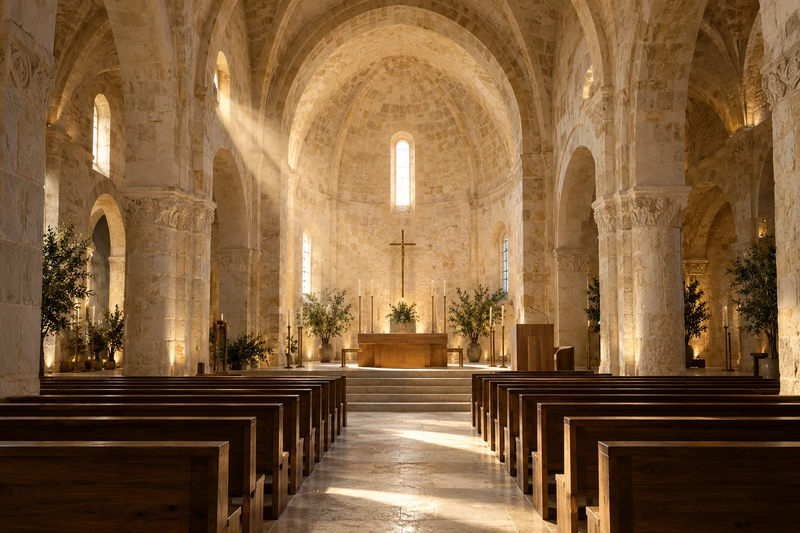
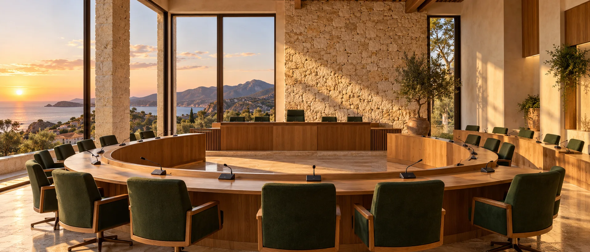

AL SERVIZIO DELLE COMUNITÀ, DAL 1979
Scegli il tuo ambito.
Un’isola di comunità. Una tecnologia che le avvicina.

OTC · Luoghi di comunitàEnti religiosi.
Tecnologia che custodisce la voce, la bellezza e la vita della comunità.
Audio · Illuminazione · Arredi sacriEntra e scopri i servizi
OTC · Spazi di partecipazioneEnti pubblici.
Spazi in cui ascoltare, decidere e partecipare insieme.
Conference · Illuminazione · ArrediEntra e scopri i serviziPassa sulle immagini per esplorare. Entra per scegliere il tuo servizio.
SOLUZIONI PER GLI ENTI PUBBLICI
Ogni spazio pubblico.
La soluzione giusta.
Soluzioni coordinate, studiate in funzione degli ambienti e delle tue esigenze. Dal progetto all’installazione, fino all’assistenza.
ENTRA NEL DETTAGLIO
Un luogo.
Molte possibilità.
Passa su un servizio o selezionalo con la tastiera per esplorare la fotografia. Tocca per aprire i dettagli.
Tutti i servizi ↓Sale consiliari e congressi
Conference system
Sistemi microfonici e di gestione degli interventi per aule consiliari, sale conferenze e congressi, con soluzioni per la registrazione delle sedute.
Richiedi informazioniVotazione elettronica
Sistemi di votazione integrati con gli impianti per le sedute, con gestione e visualizzazione dei risultati su schermi e tabelloni.
Richiedi informazioniTraduzione simultanea
Apparecchiature per l’interpretazione e la distribuzione delle lingue durante convegni e incontri, con ricevitori e cabine per gli interpreti.
Richiedi informazioniArredi per aule e sale
Arredi per aule consiliari e sale conferenze, realizzabili su misura e coordinati con le esigenze degli impianti e degli spazi.
Richiedi informazioniAudio, video e comunicazione
Sonorizzazione professionale
Impianti audio per la voce e la musica in spazi pubblici, sale e grandi ambienti, con progettazione in funzione delle condizioni acustiche e dell’utilizzo.
Richiedi informazioniBando pubblico
Sistemi di diffusione sonora per gli avvisi alla cittadinanza, con configurazioni a una o più postazioni e modalità di gestione da definire secondo il territorio.
Scopri Menestrello 2026 e prova la demo →Richiedi informazioniVideoproiezione e multimedia
Proiettori, schermi e sistemi audiovisivi per sale e ambienti pubblici, integrati con le sorgenti video e con gli impianti di amplificazione.
Richiedi informazioniStreaming e videoconferenza
Sistemi audiovisivi per incontri a distanza, collegamenti in videoconferenza e trasmissione di contenuti.
Richiedi informazioniMessaggistica informativa
Sistemi a messaggio variabile per la comunicazione dinamica, l’informazione stradale e gli avvisi alla popolazione.
Richiedi informazioniSiti web per enti pubblici
Progettiamo siti web per Comuni ed enti pubblici: identità visiva curata, informazioni organizzate e percorsi semplici per i cittadini. Affianchiamo l’ente nella definizione dei contenuti, nello sviluppo e nella gestione, con attenzione all’accessibilità e ai modelli di riferimento per la Pubblica Amministrazione. Integrazioni, manutenzione e requisiti vengono definiti nel progetto.
Progettiamo il sito del tuo Comune ↗Impianti e sicurezza
Impianti elettrici
Progettazione e installazione di impianti elettrici per gli edifici e gli ambienti dell’ente, con soluzioni dimensionate sulle esigenze di utilizzo.
Richiedi informazioniIlluminazione e domotica
Illuminazione ambientale e artistica, automazioni e controllo coordinato degli impianti per la gestione degli spazi.
Richiedi informazioniAntifurto e videosorveglianza
Sistemi per la protezione e il controllo di edifici, beni e aree, progettati secondo le caratteristiche dei luoghi.
Richiedi informazioniEdifici e patrimonio
Orologeria pubblica
Orologi da torre e da piazza, con quadranti e lancette scelti secondo le dimensioni e il carattere architettonico degli edifici.
Richiedi informazioniAutomazione campane
Sistemi per il movimento e il suono delle campane di edifici comunali, con programmazione e assistenza degli impianti.
Richiedi informazioniAllontanamento volatili
Sistemi di dissuasione per tetti, facciate, monumenti e torri, studiati in relazione agli elementi da proteggere.
Richiedi informazioni02 / BANDO PUBBLICO — MENESTRELLO 2026
Un messaggio.
Un’intera comunità.
La voce del Comune, dove serve.
Una piattaforma per creare, programmare e diffondere gli avvisi alla cittadinanza.
La tua voce
Avvisi dimostrativi a rotazione con la voce di Menestrello.
Dove vuoi arrivare?
3 postazioni selezionate. Pronto per la prova.
IL BANDO PUBBLICO SI EVOLVE
Menestrello 2026.
La voce del Comune,
ovunque serva.
Un avviso quotidiano, una manifestazione, una comunicazione di servizio: Menestrello 2026 trasforma il messaggio del Comune in una voce vicina ai cittadini.
Da una singola postazione a una rete distribuita sul territorio, riunisce preparazione dei contenuti, programmazione e gestione della diffusione in un sistema pensato per l’uso quotidiano.
Una voce pronta, in pochi passaggi ＋
Trasforma un testo in un annuncio con sintesi vocale, usa una registrazione oppure carica un file audio. Prepara i contenuti e ascoltali prima della diffusione.
Il messaggio giusto, nelle zone giuste ＋
Organizza le postazioni per Comune, zona e gruppi. Scegli dove diffondere ogni avviso: una singola postazione o più aree, secondo la configurazione dell’impianto.
Annunci subito, programmati o ricorrenti ＋
Gestisci invii immediati, campagne e ricorrenze. Gli eventi locali e i contenuti già memorizzati sulla microSD possono essere eseguiti autonomamente dalla scheda, anche con il computer spento. Alimentazione e orologio sincronizzato restano necessari; le operazioni remote richiedono connettività.
4G, Wi-Fi e ricevitori già installati ＋
La piattaforma prevede connessioni 4G e Wi-Fi, diffusione audio locale digitale e trasmissione telefonica con codice DTMF verso i ricevitori compatibili. La verifica dell’impianto permette di valutare il riutilizzo delle postazioni esistenti.
Voce e SMS, con rubriche e gruppi ＋
Oltre ai diffusori, gestisci campagne di chiamate vocali e SMS verso i contatti organizzati in rubrica. Il modulo risponditore può accogliere le chiamate con un messaggio vocale personalizzato.
Gestione remota e continuità di assistenza ＋
L’interfaccia web, gli stati operativi, lo storico e la telemetria aiutano a seguire il sistema e a diagnosticare eventuali problemi. Sono previsti aggiornamenti del firmware da remoto sui dispositivi e attraverso i canali supportati.
Funzioni disponibili secondo configurazione, hardware e connettività. Compatibilità dei ricevitori da verificare. La demo illustra il flusso: non misura copertura, qualità acustica o tempi reali di trasmissione.
03 / ENTRA NELLE POSSIBILITÀ
Il tuo spazio.
Una nuova esperienza.
Tocca i punti nell’immagine.
Ogni esigenza trova il suo posto.
01 / AUDIO E PAROLA
Le parole meritano
di essere ascoltate.
Dalla prima all’ultima fila, il punto di partenza è capire come si comporta il suono nel tuo ambiente. Poi scegliere e posizionare l’impianto giusto.
- Studio delle esigenze di ascolto
- Microfoni e diffusori integrati
- Comandi semplici per l’uso quotidiano
SOLUZIONI PER GLI ENTI RELIGIOSI
Tecnologia e cura.
Per la tua comunità.
Soluzioni coordinate, studiate in funzione degli ambienti e delle tue esigenze. Dal progetto all’installazione, fino all’assistenza.
ENTRA NEL DETTAGLIO
Un luogo.
Molte possibilità.
Passa su un servizio o selezionalo con la tastiera per esplorare la fotografia. Tocca per aprire i dettagli.
Tutti i servizi ↓Audio e liturgia
Amplificazione audio
Impianti per la voce e la musica, fissi e portatili, per gli ambienti interni ed esterni della parrocchia. Soluzioni studiate in funzione dell’acustica e della comprensibilità della parola.
Richiedi informazioniRadio parrocchiali
Sistemi per condividere celebrazioni, incontri di preghiera e attività parrocchiali con chi non può essere presente in chiesa.
Richiedi informazioniVideoproiezione
Videoproiettori, schermi e impianti multimediali per incontri, catechesi ed eventi. Configurazioni fisse o portatili secondo gli spazi e le modalità di utilizzo.
Richiedi informazioniRiproduzione organo
Sistemi digitali di riproduzione del suono dell’organo a supporto dell’accompagnamento musicale delle celebrazioni.
Richiedi informazioniCampane e campanili
Impianti campanari
Campane in bronzo, automazioni, programmatori e strutture di sostegno. Progettazione, installazione e assistenza dei sistemi per il suono delle campane.
Richiedi informazioniRiproduzione campane
Sistemi digitali per la riproduzione del suono delle campane, destinati a luoghi privi di campanile o a integrazione degli impianti esistenti.
Richiedi informazioniOrologi da torre
Orologi per campanili e piazze, con quadranti e lancette scelti in funzione dell’architettura e delle dimensioni dell’edificio.
Richiedi informazioniAllontanamento volatili
Soluzioni di dissuasione per celle campanarie, coperture e facciate, studiate in relazione alle caratteristiche dell’edificio.
Richiedi informazioniImpianti e sicurezza
Impianti elettrici e illuminazione
Progettazione e realizzazione di impianti elettrici e di illuminazione per le chiese, con attenzione alla funzionalità degli ambienti e alla valorizzazione degli elementi architettonici.
Richiedi informazioniRiscaldamento
Sistemi di riscaldamento per chiese e locali parrocchiali, comprese soluzioni per zone circoscritte da valutare in base all’uso degli spazi.
Richiedi informazioniClimatizzazione
Impianti per il comfort degli ambienti parrocchiali, con configurazioni centralizzate o indipendenti selezionate secondo le esigenze dei locali.
Richiedi informazioniImpianti antintrusione
Sistemi di sicurezza a filo o via radio per la protezione degli ambienti della parrocchia, configurabili in funzione degli accessi e delle aree da controllare.
Richiedi informazioniDomotica
Integrazione e controllo degli impianti: illuminazione, riscaldamento, accessi e sistemi audiovisivi. Comandi coordinati e gestione a distanza secondo le necessità della parrocchia.
Richiedi informazioniArredi e spazi
Vetrate e mosaici artistici
Progettazione di vetrate istoriate e mosaici, in collaborazione con laboratori artigiani specializzati. Soluzioni per nuove opere e interventi su vetrate esistenti.
Richiedi informazioniArredi sacri e parrocchiali
Banchi, altari, amboni, confessionali, sedi e mobili per la chiesa, l’ufficio parrocchiale e la catechesi. Forniture anche su misura.
Richiedi informazioniAllestimento oratori
Arredi, giochi, impianti audio e video e soluzioni per il comfort: un insieme di forniture coordinate per gli spazi di incontro della comunità.
Richiedi informazioniInformatica
Computer, accessori, installazione e assistenza per le attività della parrocchia. Servizi informatici a supporto del lavoro e della comunicazione della comunità.
Richiedi informazioniArmadi di sicurezza
Casseforti e armadi blindati per la custodia di oggetti e documenti, con dimensioni e sistemi di chiusura adatti alle esigenze dei locali.
Richiedi informazioni04 / VICINI, ANCHE DA LONTANO
Il tuo impianto.
Sempre a portata di mano.
Immagina un unico spazio per consultare i dispositivi compatibili, trovare le istruzioni e preparare una richiesta di assistenza.
Dati simulati · Integrazione da progettare sugli impianti reali
ORGANIZZAZIONE TECNICA COMMERCIALE
In Sardegna,
dal 1979.
OTC SRL si occupa di progettazione, vendita, installazione e assistenza di impianti e soluzioni tecnologiche per enti pubblici e realtà religiose.
La competenza tecnica e l’ascolto delle esigenze del cliente accompagnano ogni fase del lavoro, dalla scelta delle soluzioni alla loro messa in opera.
Parliamo del tuo progetto ↗VICINI, IN OGNI PARTE DELL’ISOLA
La distanza cambia.
La cura resta.
L’ISOLA DEI NURAGHI. LE COMUNITÀ DI OGGI.
Un’isola di comunità.
Una tecnologia che le avvicina.
I nuraghi raccontano una cultura del costruire capace di attraversare i secoli. Oggi piazze, chiese e sale consiliari continuano a essere luoghi di incontro: spazi diversi, accomunati dalla cura per chi li vive.
Portiamo progettazione, installazione e assistenza in tutta la Sardegna. Dal piccolo centro alla città, ogni impianto nasce dall’ascolto del luogo e delle persone.
Il territorio, non il numero dei nostri clienti. Fonti: Regione Sardegna, Annuario CEI, SardegnaTurismo. Consultati il 30 settembre 2026. Vista geografica illustrativa.
Parliamo del tuo luogo ↗PROPOSTE DEDICATE
Offerte
Promozioni su prodotti e soluzioni per enti pubblici e comunità religiose.
Le esigenze prima
della proposta.
Non ci sono offerte pubblicate al momento. Scrivici per conoscere le soluzioni e le forniture più adatte alle tue esigenze.
Richiedi informazioni ↗LE NOSTRE REALIZZAZIONI
Lavori eseguiti
Luoghi, esigenze e soluzioni: gli interventi OTC per enti pubblici e comunità religiose.
Ogni luogo,
un progetto.
Non ci sono ancora lavori pubblicati. Questo spazio raccoglierà fotografie e descrizioni dei nostri interventi.
Parlaci del tuo progetto ↗ANCHE DOPO L’INSTALLAZIONE
Assistenza
tecnica.
Supporto per l’utilizzo, la programmazione e la manutenzione degli impianti. Scrivici per descrivere la tua esigenza.
Richiedi assistenza ↗Preferisci parlarne? 070 8607703
PARLIAMO DEL TUO PROGETTO
Come possiamo
aiutarti?
Hai bisogno di informazioni o assistenza? Raccontaci la tua esigenza.
info@otconline.it070 8607703OTC SRL
Organizzazione Tecnica Commerciale
Sardegna, Italia
P. IVA 01723270920